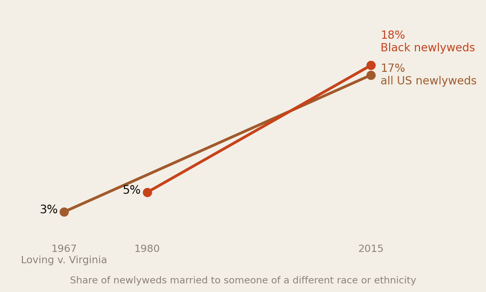
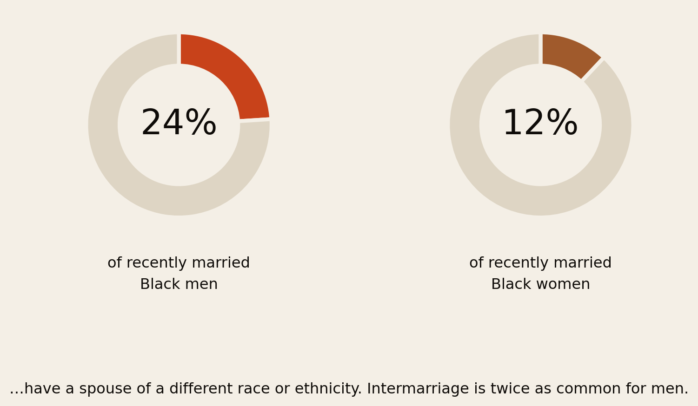
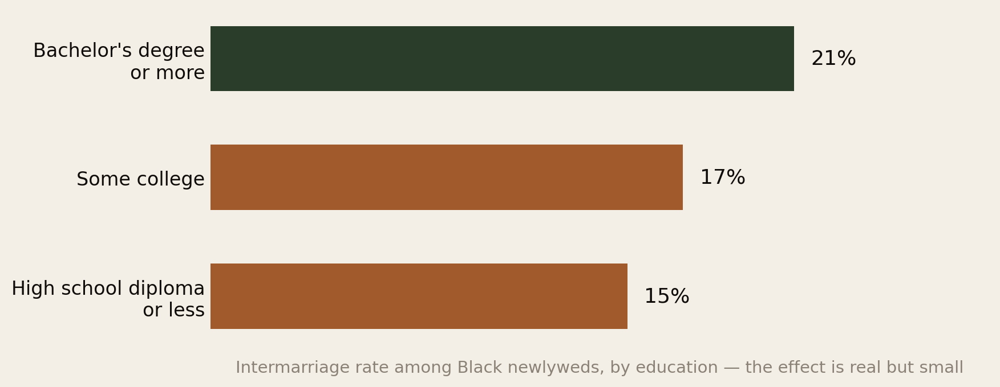
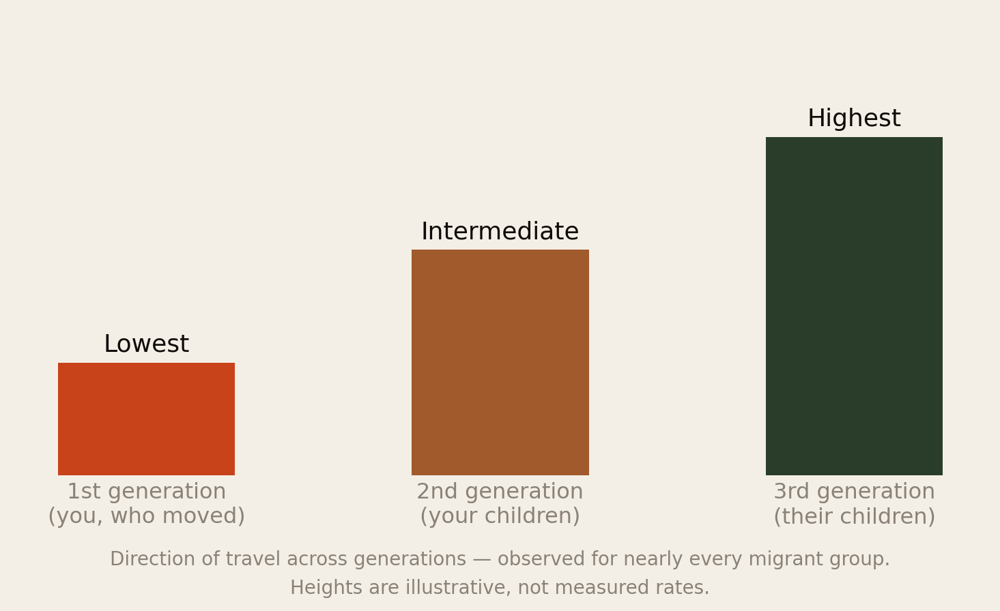
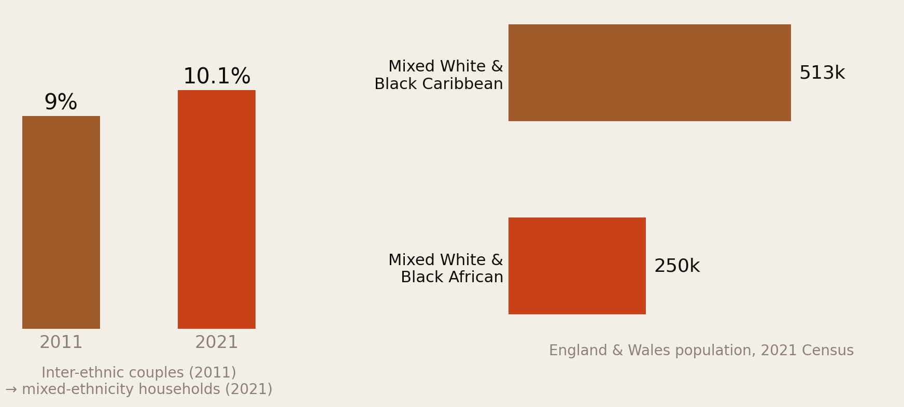
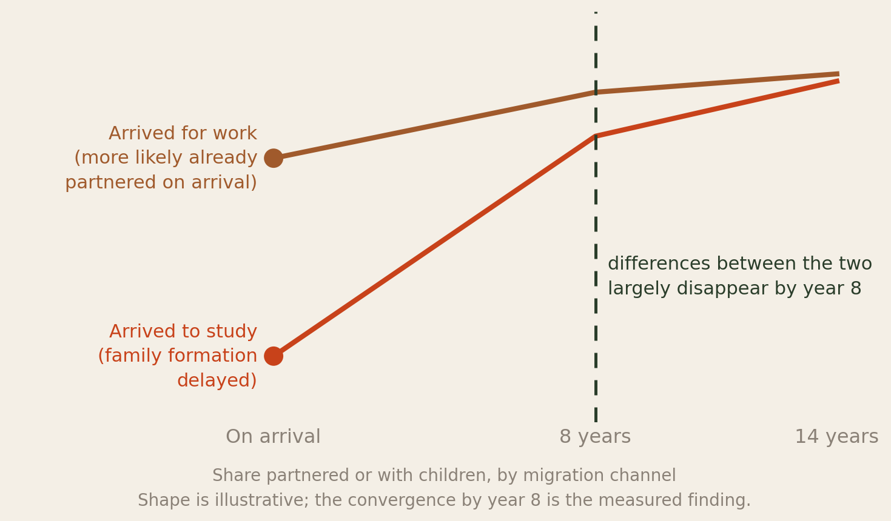

Who the Diaspora Actually Marries.
Intermarriage among Africans who moved abroad to study or to work — what the data actually shows, why the patterns exist, and why the most common explanation for them is wrong.
Section 01Executive Summary
Few subjects in diaspora life generate more conversation and less evidence than who people marry. The talk runs in two directions, both of them loaded: intermarriage as proof of arrival, or intermarriage as a kind of leaving. Neither framing survives contact with the data.
What the numbers actually show:
- Intermarriage is roughly twice as common for Black men as for Black women. Among recently married Black adults in the US, about 24% of men and 12% of women have a spouse of a different race or ethnicity (Pew Research Center). This is the single largest and most persistent pattern in the field.
- African immigrants break the standard model. They are among the most educated migrant groups anywhere — and, despite that, research finds they have extremely low rates of marriage with white partners. The usual assumption that education drives intermarriage does not hold here.
- When Africans abroad do marry outside their own national group, they are more likely to marry African Americans or other Black populations than white partners.
- Intermarriage rises reliably with generation — lowest for the first generation, intermediate for their children, highest for the generation after. This holds for virtually every migrant group ever studied.
- Arriving to study and arriving to work produce different timelines. Student migrants delay partnership and children; labour migrants are more likely to arrive already partnered. The two converge after about eight years.
- In England and Wales, mixed-ethnicity households reached 10.1% by the 2021 Census, and the Mixed White & Black African population stands at about 250,000.
The strongest predictor of who you marry is not your values, your education, or your loyalty to home. It is who is standing in the room during the years you are looking.
Section 02What We Are Measuring
Three different things get called “interracial marriage” in diaspora conversation, and they behave differently:
- Interracial — marrying across a racial boundary, e.g. a Kenyan man and a white British woman. This is what most of the US data measures.
- Inter-ethnic — marrying across an ethnic or national line within the same broad racial group: a Nigerian and a Ghanaian, an Igbo and a Yoruba, a Somali and an African American. Statistically invisible in most datasets, socially enormous in real families.
- Cross-border — marrying someone who lives in another country, which is primarily an immigration question. That is a separate report: Marrying Across Borders covers the visa thresholds and waiting times.
This report is mostly about the first two, because they are what the migration data captures.
A note on how to read it. Nothing here is an argument about who anyone should marry. Intermarriage is not a score. It is not evidence of integration succeeding or of culture being abandoned — both readings are common in diaspora discussion and neither is supported by what follows. These are population-level patterns, and population-level patterns say nothing about any individual couple.
Section 03The Baseline
Start with the direction of travel, because it is dramatic.

In 1967, when interracial marriage was still illegal in parts of the United States, 3% of newlyweds married across racial lines. By 2015 it was 17% — more than a fivefold increase within a single lifetime. Among Black newlyweds specifically the rate more than tripled, from 5% in 1980 to 18% in 2015.
That is the backdrop against which every diaspora conversation about this happens: a society-wide shift, moving fast, in one direction. What follows is about where Africans abroad sit inside it — and the answer is: not where you would guess.
Section 04The Gender Gap
This is the most discussed pattern in the diaspora and the one most solidly grounded in data.

24% of recently married Black men, against 12% of recently married Black women. Exactly double. The gap is one of the most stable findings in the whole literature, and it is far wider for Black Americans than for most other groups.
It is worth being careful about what this does and does not mean. A gap in rates is not a statement about desirability, standards or loyalty — the explanations that circulate most freely in diaspora group chats. Demographers point instead to a set of structural factors: differences in where men and women work and study, sex ratios within local marriage markets, differences in educational sorting, and the simple fact that men and women in the same community often move through different social spaces.
A gender gap in a population statistic is a description of a market, not a verdict on anybody in it.
Section 05The African Exception
Here is the finding this report exists for, and it cuts directly against the standard model of immigrant integration.
The conventional theory says intermarriage follows education and time: the more educated an immigrant group, and the longer it has been settled, the more it marries into the majority. African immigrants satisfy the first condition emphatically. As our demographic report documented, 46% of sub-Saharan African immigrants in the US hold a bachelor’s degree or higher — about 61% for Nigerian-born immigrants — well above both the foreign-born and US-born averages.
And yet research on Black populations in the United States finds that despite exceptionally high levels of education among Black African immigrants, they have extremely low rates of marriage with white partners (Cornell University research on interracial marriage and cohabitation among America’s diverse Black populations).
Two further findings sharpen it:
- African immigrants are more likely to partner with African Americans than with white Americans. When marriage happens outside the national-origin group, it happens most often within the broader Black population.
- Marriage between different Black populations remains low. Unions between African immigrants and African Americans, or between African and West Indian communities, occur at low rates — researchers describe the social distance between these groups as substantial. The diaspora is not one marriage market. It is several, sitting next to each other.
That second point is the one that tends to surprise people most, because it contradicts the assumption that shared heritage produces shared social life. It often does not — not at the scale of marriage.
Section 06The Education Effect

Education does raise intermarriage — 21% for those with a bachelor’s degree or more, against 15% for those with a high school diploma or less — but look at the size of the effect. Six percentage points across the entire education range.
Set that against the gender gap in Fig 2, which is twelve points. Being a man matters roughly twice as much as having a degree. And set it against the African immigrant finding in Section 05, where a group with extraordinarily high education shows very low intermarriage.
The conclusion is that education is a weak lever here. What a degree actually does is change which rooms you are in — and if those rooms are full of people from your own community, as they often are for African graduates who studied together and work in the same sectors, high education produces no increase in intermarriage at all.
Section 07The Generation Ladder

For virtually every racial and ethnic group ever studied, intermarriage rates rise with each generation: lowest among new immigrants, intermediate among the native-born children of foreign-born parents, highest among the third generation.
This is the most reliable regularity in the field, and it reframes the whole question for anyone in the diaspora. The generation that moved is, statistically, the generation least likely to marry out. If you arrived as a student or a worker, you are at the bottom of the ladder — and the pattern predicts that your children will be somewhere in the middle and your grandchildren near the top.
That is not a warning and it is not a target. It is what happens when each successive generation is born further inside a society’s schools, workplaces and friendship networks. Every diaspora community in history has walked up this ladder. Knowing the shape of it is more useful than being surprised by it in twenty years.
Section 08The UK Picture

Inter-ethnic partnerships were 9% of couples in England and Wales at the 2011 Census, up from 7% in 2001, and by 2021 mixed-ethnicity households were 10.1% of all households.
The right-hand panel carries the more interesting comparison. The Mixed White & Black Caribbean population is roughly double the Mixed White & Black African population — 513,000 against 250,000 — even though the Black African population in Britain is now larger than the Black Caribbean one.
The explanation is time, not preference. Caribbean migration to Britain began in earnest in the late 1940s; large-scale African migration is mostly a phenomenon of the 1990s onwards. The Caribbean community is simply further up the generation ladder in Fig 4. Britain’s Black African communities are, on this measure, where its Caribbean communities were a generation or two ago — and both Mixed categories have more than doubled since they were first counted in 2001.
Section 09Study vs Work
You asked specifically about the two routes people take, and the research does distinguish them — not in who people marry, but in when.

Labour migrants are more likely to arrive already partnered, or to have a spouse abroad awaiting reunification. Student migrants delay: they stay in education longer, experience a steeper income climb, and are less likely to be married or to have children in their early years abroad. But the gap does not last — the differences between the two groups become minimal after about eight years in the country.
Why this matters for partner choice, even though the research does not measure it directly:
- The student route puts you in the most mixed environment of your life at exactly the age most people partner. A university is a dense, age-matched, diverse social market. If intermarriage is going to happen, this is structurally the likeliest moment.
- The work route often does the opposite. Arriving at 30 into a job, a commute and a small professional circle is a far narrower social market — and if you arrive already partnered, the question is settled before you land.
- Timing compounds with the visa. As Where the Door Is Actually Open set out, post-study work windows run 12 to 36 months. Those are the years when a student-route migrant is deciding both where to live and who to live with, often under time pressure. The immigration clock and the relationship clock run together, and people rarely plan for that.
Section 10Why These Patterns Exist
Five structural explanations do most of the work. None of them is about anyone’s character.
- Who is in the room. Demographers call it the marriage market: you can only partner with people you actually encounter. African migrants often arrive into dense co-ethnic networks — the same church, the same student association, the same hospital ward, the same city district. High education does not widen that circle if the education happened alongside the same people.
- Group size and concentration. Larger, more geographically concentrated communities intermarry less, everywhere, for every group. A Nigerian in Houston or a Somali in Minneapolis has a large local marriage market of their own; a Malawian in a small European city may have almost none.
- Age at arrival. Arriving at 19 to study and arriving at 33 for work place you at completely different points in your own partnering life. This is probably the single biggest difference between the two routes.
- Family expectation, and how far it reaches. Parental preference is a documented influence on partner choice across migrant communities in Europe. Its force declines with distance and generation — which is part of why the generation ladder in Fig 4 exists.
- Religion, which is frequently the real boundary. Much of what gets discussed as a racial boundary is in practice a religious one. A Muslim Senegalese and a Catholic Congolese may face more family resistance than either would in marrying a co-religionist of another race entirely.
Almost every pattern in this report is explained by geography, timing and group size — not by preference. Which means the patterns change when your circumstances change, and not before.
Section 11What This Means
- Stop reading population statistics as personal verdicts. The 24%/12% gap describes a market of millions. It says nothing about any individual’s worth, standards or choices, and it is routinely deployed in diaspora discourse as though it did.
- If you want a partner from your own community, understand that it takes deliberate effort abroad. Co-ethnic marriage is the statistical norm for first-generation migrants precisely because they live inside co-ethnic networks. If your work and neighbourhood do not supply that, no amount of preference will — you have to build the network. This is exactly what community associations, alumni groups and yes, peer networks, are structurally for.
- Expect the generational shift, and decide now what you want to transmit. The ladder in Fig 4 is close to a law of migration. Families who plan for it — language, visits home, food, faith, naming, honest conversation — transmit more of what they care about than families who are surprised by it.
- If you are on the student route, know that your social market is at its widest right now. Whatever you want — a partner from home, from the diaspora, or from anywhere — university years are when the room is most open. It narrows considerably afterwards.
- Do not confuse the intermarriage question with the immigration question. Marrying across a border is a visa problem with published costs and timelines, covered in Marrying Across Borders. Marrying across a race or ethnicity is a social question with no paperwork attached. They get discussed together and they have almost nothing in common.
- The African–African American distance is worth naming. The low rate of marriage between African immigrants and African Americans is one of the quieter findings here, and it points at a real social gap between communities that outsiders assume are one. Closing it is a matter of actual contact, not shared category.
Section 12Method & Limits
What this report is: a synthesis of published demographic research on intermarriage, read specifically for Africans who moved abroad to study or work. Data as at 12 August 2026.
Significant limits, and there are more than usual here:
- The headline US figures are for Black newlyweds overall, not African immigrants. Pew’s intermarriage series does not break out African-born respondents. We use it as the baseline and flag every point where African immigrants are known to diverge from it — which is a lot.
- The African-specific findings are qualitative in the sources. The research establishes that African immigrants have very low intermarriage with white partners despite high education, but published percentage rates for African-born migrants by year are not available. We have quoted the direction and declined to invent numbers.
- Fig 4 and Fig 6 have illustrative heights and curves. The generational direction and the eight-year convergence are the measured findings; the shapes are drawn to communicate them. Both charts say so on their face.
- The Pew reference year is 2015. It remains the most-cited comparable series, but intermarriage has continued to rise since, so these figures are likely conservative.
- UK figures mix two measures — inter-ethnic couples in 2011 and mixed-ethnicity households in 2021. They show direction, not a like-for-like change.
- Almost all usable data is US and UK. France, Germany, Canada, the Gulf and intra-African contexts are barely covered here, and French statistics in particular do not record ethnicity by law. This is an anglophone-skewed picture of a global population.
- Marriage is not partnership. These series count marriages. Cohabitation patterns differ, and in several countries a majority of couples under 35 are not married at all.
- No causal claims. Nothing here establishes that any factor causes any outcome. These are associations in population data.
Principal sources: Pew Research Center, Intermarriage in the U.S. 50 Years After Loving v. Virginia; Pew, statistical portrait of the US Black immigrant population; Cornell University on interracial marriage and cohabitation among America’s diverse Black populations; Migration Policy Institute on second-generation intermarriage; Intermarriage among New Immigrants in the USA; ONS on inter-ethnic relationships and the 2021 Census; European Journal of Population on migration motive and family trajectories.
↓ Download the full 9-page PDF edition
Companion reports: Marrying Across Borders, The Diaspora, Counted and Navigating Cultural Identity.
The diaspora helps the diaspora.
Africa Global Forum is a peer network for Africans abroad — help each other, sit together, and bounce ideas. The research above is part of an open library. The Forum itself is by application.